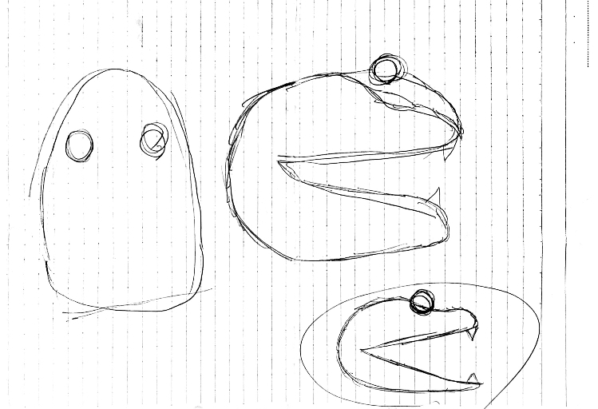

1.作品名
ワニさんピンセット2.構想段階のスケッチ
3.実際のワニさん

4.設計ファイル
ワニさんファイル5.作品の説明
このピンセットはワニさんの顔をイメージして作りました。6.なぜこの作品を作ったか
この課題を取り組む前段階でのグループワークで様々なピンセットを提案し合った際に、〜型のピンセットというのが比較的にすなく、
私が経営者としてピンセットを作るのならみんなが思いついていないものを
作り販売しようと考えたからです。そのため、このピンセットを作りました。
7.制作のプロセス